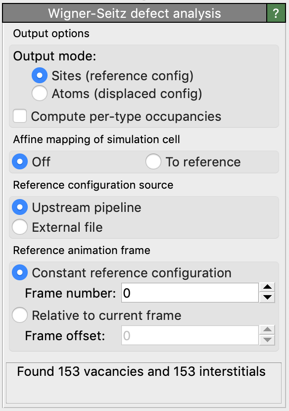
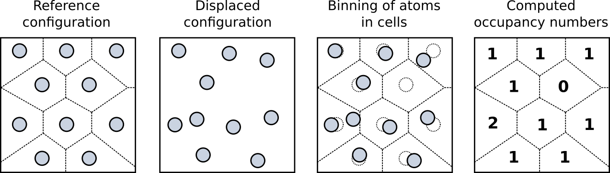

Wigner-Seitz defect analysis
{kind=link}
This analysis modifier identifies point defects in crystalline structures using the so-called Wigner-Seitz cell method. It can be used to count vacancies and interstitials, for example, or track their motion through the lattice.
How the Wigner-Seitz cell method works
The WS analysis method requires two configurations of the atomistic system as input: the reference configuration and the displaced configuration. The reference configuration defines where atoms would be located in a defect-free state of the crystal. Thus, typically this is a perfect crystal lattice where every site is occupied by exactly one atom. The displaced configuration is the one to be analyzed, which typically contains some point defects, such as vacancies and interstitials, that we want to identify.
To describe how this identification process works, we first have to introduce an important terminology: In the following, atoms from the reference configuration will be denoted as sites, while atoms from the displaced configuration will simply be referred to as atoms. This distinction emphasizes that the displaced configuration is an arrangement of real atoms, while the reference configuration only specifies locations in space where atoms are supposed to be located. If an atom is located on or close to a site, we say that the site is occupied by the atom.
The WS cell method determines which atoms occupy what sites. In the end, every atom will be assigned to exactly one site. Some sites may be occupied by no atom at all. We call these sites vacancy sites. Other sites may be occupied by more than one atom. We call such sites interstitial sites and the atoms occupying them interstitial atoms. The assignment of atoms to a site is performed using a spatial partitioning scheme as depicted in these figures.
{kind=link}
Each atomic site of the reference configuration defines the center of a Wigner-Seitz cell (also called a Voronoi cell), which is the spatial region belonging to that site. Any atom that is located within the Wigner-Seitz cell of a site is said to occupy that site.
How is the Wigner-Seitz (i.e. Voronoi cell) of a site defined? Mathematically speaking, it is the locus of points in space that are closer to the site than to any of the other sites. Note that points exactly on the border line between two Wigner-Seitz cells have exactly the same distance to the two sites at their centers.
It is worth pointing out that thanks to this property, the algorithm never has to construct the geometric shapes of the WS cells explicitly. To determine in which cell a given atom is located, it is sufficient to determine what is the closest site. The algorithm thus boils down to a closest point search. Taking an atom’s location, the algorithm finds out what site is closest to this location and increments that site’s counter, the so-called occupancy number, by one.
Note that the number of atoms in the displaced configuration and the number of sites in the reference configuration do not need to be the same. But in cases where they are, the number of vacancies and the number of interstitials found by the algorithm will exactly match. That is because, in this case, the sum over all occupancy numbers is equal to the number of sites in the reference configuration.
Modifier inputs
The current simulation frame in OVITO is taken as the displaced configuration by the modifier. The reference configuration is by default taken from frame 0 of the loaded animation sequence (option Upstream pipeline). Alternatively, the modifier lets you load the reference site positions from a separate data file (option External file).
Modifier outputs
The modifier lets you choose between two different output modes: Sites and Atoms.
In output mode Sites, the modifier outputs the sites of the reference configuration together with their computed
per-site occupancy numbers (as shown in the 4th image above). Each site will be associated with a particle property named Occupancy,
telling the number of atoms sitting on that site. This integer property subsequently allows you to identify vacancy and interstitial sites
as well as antisites (e.g. using the Expression selection modifier).
It is important to realize that in this output mode, the displaced configuration gets completely replaced with the reference configuration
after performing the WS algorithm. What you see in the viewports are now the ideal site positions and the physical
atom positions are no longer available!
In output mode Atoms, in contrast, the modifier will output the atoms of the displaced configuration.
Each atom will be assigned a property named Occupancy, now counting how many atoms in total are occupying the same site as the
atom itself. Furthermore, the modifier will assign a property named Site Type, which tells for each atom the type of reference site
it has been assigned to by the WS algorithm. This information allows to subsequently identify antisites, for example, by comparing
the type of an atom to the type of its site.
Finally, the algorithm assigns two additional properties named Site Index and Site Identifier
to each atom, specifying the index and the unique identifier (if present) of the site to which the
atom has been assigned. This information allows you to subsequently identify atoms which have left their original sites, for example.
Note, however, that in atoms output mode you will not be able to identify vacancy sites, because only the physical atoms
are retained.
Irrespective of the selected output mode, the modifier additionally reports two overall quantities:
- Number of vacancies
Counts the total number of sites in the reference configuration which are not occupied by any atom from the displaced configuration (i.e. sites with zero occupancy).
- Number of interstitials
Counts the total number of excess atoms, summed over all sites of the reference configuration. A site with
Occupancyequal to 2 has one excess atom. A site withOccupancyequal to 3 has two excess atoms, and so forth.
These two quantities are made available as global attributes named WignerSeitz.vacancy_count
and WignerSeitz.interstitial_count by the modifier.
Typical workflow
When working in output mode Sites, each atomic site will be associated with a new integer property named Occupancy.
You can subsequently use the Expression selection modifier to select sites that
correspond to certain types of point defects. For example, the selection expression Occupancy == 0 selects all empty sites (vacancies)
while the expression Occupancy > 1 selects all sites containing at least one interstitial atom. Typically, you want
to visualize just the defective sites and hide all other sites, which are occupied by exactly one atom. This can be achieved with the following modification pipeline setup:
{kind=link}
Systems with more than one atomic species
To identify antisites and similar defects in multi-component systems, more specific information about the atom(s) that occupy a site is required.
For this, the modifier provides the option Output per-type occupancies. If activated, the modifier breaks down the
occupancy number of each site into type-specific counts. Thus, if the displaced configuration contains
atoms of different types, then this allows you to determine how many atoms of each type occupy each
site of the reference crystal. The per-type occupancy numbers are output as
vector components of the Occupancy particle property. For example, the
property component Occupancy.1 will contain the number of atoms of type 1 occupying a site.
OVITO’s particle selection tools, in particular the Expression selection
modifier, can be used to select the sites that meet specific criteria, for example
A-sites that are occupied by a B-atom (antisite). Another way of selecting this type of defect sites
is using OVITO’s scripting interface or OVITO’s Python script modifier. You can find a detailed example in the
documentation of the WignerSeitzAnalysisModifier class.
Affine mapping of the simulation cell
Note: This option applies only to systems with periodic boundary conditions. For non-periodic systems (and typically also for systems with mixed boundary conditions) it should remain turned off.
The Affine mapping setting controls how OVITO treats situations in which the volume of the periodic simulation cell has changed between the reference and the current configuration. Such cell changes typically occur in simulations due to active straining of the cell or stress relaxations. If affine mapping is turned off (the default), the current and the reference particle positions are taken as is for the WS analysis. Any changes of the simulation cell geometry are ignored. If the particle system expands or shrinks as a whole, however, the associated particle displacements may lead to artifacts in the Wigner-Seitz analysis, because particles appear to have left their ideal reference sites.
To avoid such artifacts associated with system volume changes, the option To reference performs a remapping (homogeneous rescaling) of the current particle positions to the reference simulation cell before performing the actual WS analysis. For that, OVITO determines the affine transformation mapping the current onto the reference simulation cell geometry and applies this homogeneous transformation to all particle coordinates. Now the particles will stay close to their original sites should the system expand or shrink as a whole.
See also
ovito.modifiers.WignerSeitzAnalysisModifier (Python API)